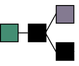

By: Justin Meiners.
View the final code and other resources in the GitHub repo.
Proof-of-work is the key innovation behind Bitcoin that allows the history of a piece of information to be recorded and its authenticity verified in an “objective way”. Embedded in the structure of a proof-of-work chain is evidence that a certain amount of computing power was consumed to produce it. This proof allows anyone to verify its authenticity by examining the chain itself without requiring trust of third parties.
This article will introduce proof-of-work algorithms by writing a tiny blockchain in C closely following the Bitcoin protocol. It is intended to introduce programmers who are curious how cryptocurrency works. Cryptocurrency enthusiasts will be familiar with most of the material, but can benefit by seeing it work in detail.
Note: This tutorial is a literate program. This means you are reading the source code right now! The final output was created by “weaving” the blocks of code together.
A hash function h is a mathematical function sending data of any length to data of a fixed length.
We often refer to the output data h(x) as a hash or checksum of the data x.
For example, Bitcoin uses the sha256
function which sends any binary data to a 256 bit hash.
By definition hash functions cannot be one-to-one.
There will be many inputs which produce the same output simply because
there are fewer outputs available and some must double up.
Consequently, if we are given a hash y, it’s impossible to know exactly what input x it came from.
The best we could do is describe the collection of all inputs giving a particular output which is the inverse
image: h^-1(y) = { x : h(x) = y }.
In the context of cryptography, we are particularly interested
in one way hashes.
These are hashes for which it is easy to calculate the output h(x) for a given input x
and very difficult to find an alternative piece of data that produces the same output.
In other words, we don’t want to be able to easily find a z /= x where h(z) = h(x).
This is referred to as a hash collision.
Designing a secure hash is about making it very difficult to reverse inputs
from outputs.
Exercise: Give an example of a hash function (does not need to be cryptographic).
Exercise: Must a hash function map to every output multiple times?
Exercise: Secure hashing is only possible because even 256 bits can hold an incredible number (2^256) of distinct values.
Assume the number of distinct values you can iterate and hash in a reasonable amount of time is 2^32.
How large of a hash do you need so that the
probability of finding a collision less than one in a million?
Cryptographic hashes are very useful for verifying data, because they can be much smaller than the data, but also contain information about the full data. Suppose a friend recommends you a new computer program. How can you get the program, and ensure it’s what he recommended and not a virus?
If your friend sent you the program himself, you could trust him directly. Assuming that’s not convenient, he may have directed to a specific site to download it from, instead. In this case he trusts a third party to provide you the correct file.
Alternatively, your friend could compute a hash of the file and send you that, since it would be much smaller than the full program. You could then compute the hash of the file you downloaded, and then check if they match. If they do, it’s extremely likely that the program is authentic. The alternative is that the provider crafted a different file that also hash the same hash, which cryptographic hash functions make very hard to do.
This is exactly what makes BitTorrent work. To download something like a Linux distribution, you first obtain a hash from the team of trusted developers. You can then safely download the data from anywhere else on the internet (assuming that hash was correct).
Hashes are helpful for recording and verifying the state of data at a fixed snapshot in time. But sometimes, we want to record and verify the history of some data over time. Two pieces of data may look the same now, but might not be equivalent if two different paths were taken to get there. In physics and math, this property is called path dependence:

A bank account is one such example. We not only care about the final balance, but the full history of each deposit and withdrawal. Did our bills get paid? Has someone been withdrawing money from our account? Path dependence is starting to sound pretty important!
Recording hashes of a bank balance over time would not be very useful for verifying it’s authenticity. Whenever the balance changes, the hash would also change, whether due to authentic transactions or manipulation. What would be more useful is to record and hash the history of transactions over a period of time. Then in future bank statements you could check those ranges against the hash.
This scheme works pretty well for bank accounts, but it’s a bit harder to generalize to other kinds of data. For example, we can’t always organize the full data neatly into a time window. What we need is to generalize these ideas, leading to the concept of a blockchain.
A blockchain is an ordered sequence of records called blocks. Each block is made up of a header and contents. The contents is arbitrary data to be stored in the chain. The header contains some metadata about the block, along with two hashes:
The hash of the contents.
The hash of the previous block header (or 0 if there is none).
typedef struct
{
/* Length of the data in the block */
uint32_t contents_length;
/* Hash of the block contents. */
/* 32 is the number of bytes in a sha256 hash */
uint8_t contents_hash[32];
uint8_t previous_hash[32];
} block_header_t;
Used by 1
The use of the first hash is obvious. To check whether some data is in our chain, take its hash, and try to find a header with that contents hash. The headers tend to be much smaller than the blocks, so sharing headers isn’t a burden.
But, the second hash is the really interesting part. It contains a hash of the previous header, and since the previous header has a similar hash, all the hashes in the chain actually contribute to the last header. This can be used to ensure no additional blocks can be inserted, or removed, and no history is modified.
Another way to see this “domino” effect is by thinking of the blockchain as a recursive definition.
Let H_i be the hash of the ith block header and C_i be the hash of it’s contents.
Then H_n is defined in the following way:
H_1 = h(0 + C_1))
H_n = h(H_{n-1} + C_n)
If we expand, this definition for a specific case like H_4, we see it includes the contents hash of all previous blocks:
H_4 = h(h(h(h(0 + C_1) + C_2) + C_3) C_4)
Essentially a blockchain is a linked list, but with additional cryptographic information, that makes the chain, and it’s contents, tamper resistant. Given some small header information, one can verify whether a given record:
Creating a block and adding it to the chain is straightforward.
We require a reference to a previous block header (or NULL for the initial “genesis block”),
but not any of the previous contents.
We simply hash the new contents and the previous block header and assign it to the new header.
block_header_t build_block(const block_header_t* previous, const char* contents, uint64_t length)
{
block_header_t header;
header.contents_length = length;
if (previous)
{
/* calculate previous block header hash */
calc_sha_256(header.previous_hash, previous, sizeof(block_header_t));
}
else
{
/* genesis has no previous. just use zeroed hash */
memset(header.previous_hash, 0, sizeof(header.previous_hash));
}
/* add data hash */
calc_sha_256(header.contents_hash, contents, length);
return header;
}
Used by 1
The function calc_sha_256 comes from a dependency: sha-256.h and sha-256.c
which you will need if you want to follow along.
If you have blockchain headers you can trust, you can verify that any contents of the chain are valid, even if you don’t have them. The headers tend to be a lot smaller than the original data, so you don’t need to store much to get that ability. So that’s all really cool, but this is still a long ways away from being able to do what Bitcoin does.
The main problem is how to get the valid headers in the first place. Some financial transactions can be stored in a valid blockchain, but how do you know those transactions are correct? A malicious person could modify some contents, update the chain, and you would have no way to tell they weren’t genuine. At some point, you need to obtain headers from a trusted party. At that point, why can’t you just trust the third party to give you the data as well?
So, blockchains don’t automatically make a record trustworthy, but they can be useful record-keeping tools among trusted parties. The Git version control system appeared before Bitcoin and uses a blockchain just like this! It stores each change to a set of files in a block called a commit. The commit includes a hash of the state of the files combined with the hash of the previous commit. If the contents of an old commit are modified, all future commits must also change. But, at the end of the day, Git repositories are shared between trusted parties.
The challenge of Bitcoin is to store a record of financial transactions that complete strangers can agree on. Internet money shouldn’t require entrusting funds to another person! What it needs is a simple rule that anyone can use to “objectively” determine whether a given blockchain is the “right” one. This is the problem solved by proof-of-work.
Instead of allowing blockchains to be created freely, proof-of-work requires that computing resources be spent on a time-consuming problem for each block of the chain, in a process called mining. To mine a block a computer is given a difficult search problem, to find an answer for (a popular analogy is of “a Sudoku puzzle” to be solved). It searches, and searches, using compute power, and after some time hopefully finds an answer. This answer is then included in the block itself providing verifiable proof to everyone, that the work was done. Hence the term “proof-of-work.”
Turning a regular old blockchain into a proof-of-work blockchain is surprisingly easy.
We just need one additional constraint for a chain to be valid.
We require the hash of any block header to to be less than some target hash.
By “less than” we mean the usual byte-by-byte lexicographic comparison
(for example 0000 0001 < 0000 0010).
Let’s call this the proof-of-work rule.
From what we have discussed so far, this is a strange requirement. We didn’t use any ordering concepts to define hashes in general. Besides that, we don’t get to pick our hashes. They are entirely determined by the contents and previous blocks. So how can we make sense of this?
Here is one trick that can help. If we add an extra field to the header which has no meaning, then we can modify then hash of the header simply by changing that field. The important information can remain unmodified and the blockchain is undamaged.
Bitcoin adds an integer called a nonce to the block header which does exactly this. If we don’t like the header’s hash, we can change it, simply by changing the nonce.
In order to satisfy our new proof-of-work rule we specifically need a hash in the target range. Since we know how to change the header hash, there is another trick we can use to get the hash we need. Just keep trying until we find one we need! Specifically, keep trying different nonces and check if the new header hash is valid. This can take some time and is the “difficult search problem” we described above. There is no rhyme or reason to guessing the nonce. We just try as many as we can!
Let’s redefine our header, and add a timestamp and nonce.
typedef struct
{
uint32_t contents_length;
uint8_t contents_hash[32];
uint8_t previous_hash[32];
/* when this block started being mined */
uint32_t timestamp;
/* This is adjusted to make the hash of this header fall in the valid range. */
uint32_t nonce;
} block_header_t;
Let’s also write a loop that tests numbers in order, until we find a valid hash:
/* adjust the nonce until the block header is < the target hash */
uint8_t block_hash[32];
for (uint32_t i = 0; i < UINT32_MAX; ++i)
{
header->nonce = i;
calc_sha_256(block_hash, header, sizeof(block_header_t));
if (memcmp(block_hash, target, sizeof(block_hash)) < 0)
/* we found a good hash */
return;
}
Used by 1
As you can imagine, this brute force operation of adjusting numbers, and hashing again can take a lot of CPU time!
Exercise: Compare the hashes of two identical headers with nonces that differ by by 1.
It’s possible that the miner tries all the numbers that can be stored in a uint32 (up to 4294967295) and never finds a valid hash.
This is what the timestamp field is for.
If all numbers have been tried, the timestamp is reset to the current time, and the process starts again.
Here is the complete mining function with time reset:
void mine_block(block_header_t* header, const uint8_t* target)
{
while (1)
{
/* MINING: start of the mining round */
header->timestamp = (uint64_t)time(NULL);
@{nonce search}
/* The uint32 expired without finding a valid hash.
Restart the time, and hope that this time + nonce combo works. */
}
/* this should never happen */
assert(0);
}
Used by 1
We haven’t talked about how the target hash is chosen. Any hash can be used. However, the smaller (in ordering) it is, the more difficult it is to find a valid hash, as there are fewer hashes within the valid range.
In our project, we will use a constant target. In Bitcoin, the target actually changes with each block. This allows bitcoin to adjust the mining difficulty in order to regulate the speed of block production as computers get faster and faster.
Exercise: Suppose we want blocks to be produced at a uniform rate. Describe an algorithm which analyzes the times taken to mine each previous block and outputs a target for the next block.
Let’s review what mining does for us. First, it allows us to control the rate at which valid blocks are produced. Computers can only search for nonces so fast, and by adjusting the target, we can get a pretty good limit on the rate of production.
This is especially important for Bitcoin to manage network latency. When a valid block is mined, that block is shared all across the internet to other Bitcoin instances. If blocks are being produced too quickly than they can be communicated, then some fill fail to hear about them and stay in sync.
Most importantly, mining gives us an objective way to verify whether a chain is valid. Note that the proof-of-work rule is a mathematical property, that can’t be faked. If we find a header that has a hash in the valid range, we know it was either an anomaly or computing resources were spent in order to find a valid hash. We can determine this objectively, by looking at the chain itself. Furthermore, longer chains have had more computing resources spent making them.
On the Bitcoin network, computers across the world are constantly racing to be the first to find a valid hash, and mine a new block. They receive a financial reward for producing the next valid block (hence the mining analogy). Since this has been going non-stop since it’s initial launch in 2009, the Bitcoin blockchain has had a lot of computing resources spent on it. To create a valid chain just as long, with as much proof of work, would require redoing all that computing work, not to mention the current chain keeps extending. This is what makes the chain verifiable. The valid Bitcoin chain is always the one that is the longest because it is the one that has had the most mining effort spent on it.
“Bitcoin can thus be understood as a technology that converts electricity to truthful records through the expenditure of processing power.” - Safedean Ammous.
At any snapshot in time, determining the longest chain precisely is slightly more complicated. New blocks are regularly being mined, and it’s possible that two ore more valid blocks are created at around the same time. At this point the chain forks, and there are two equally long chains to choose from.

However, as soon as a new block is added, miners are already rushing to be the next to create a new block. They have to decide which of these paths to start working one, as the mining work can only be done for one of them. So they pick one (perhaps arbitrarily) and by doing so they essentially vote on which path is the future. Miners are incentived to come to a consensuses quickly, as they need their block to be included in the valid chain, in order to spend their rewards.
Overtime, brief forks occur, but quickly resolve and short orphans are abandoned. In practice, only the very latest blocks risk having a contention and being rejected. Blocks included much earlier have so much proof-of-work on top of them, that changing them becomes practically impossible.

(Image thanks to Nakamoto Institute)
“Proof-of-work is essentially one-CPU-one-vote. The majority decision is represented by the longest chain, which has the greatest proof-of-work effort invested in it.” - Satoshi Nakamoto
The Bitcoin blockchain stores a ledger of financial transactions each referencing previously received amounts and sending them to new addresses. It uses some clever cryptography to ensure that the only the owners of funds can move them. It also has an elaborate network protocol for accepting transactions, broadcasting them, and syncing the state of the chain across the internet. Most of the Bitcoin code is dedicated to these transaction mechanisms and network infrastructure. All of this is interesting stuff, but not necessary to understand proof of work.
To keep things simple, our blockchain will just run locally on a computer. However, we still want a real proof-of-work effect; that longer chains have more work spent on them. We will make a simple Unix-style command line tool which takes text input and constructs a proof-of-work blockchain from it. It will store each line in a separate block. The output will be a textual representation of a blockchain. Just like the real thing, anyone can verify it’s proof-of-work by examining it directly.
Storing text in a blockchain may not sound very useful, but it does follow Bitcoin tradition. The genesis block curiously includes this headline from a 2009 English newspaper:
“The Times 03/Jan/2009 Chancellor on brink of second bailout for banks”

In the context of the global Blockchain, this is proof that Bitcoin started around this time.
Here is our basic program loop which will read lines from stdin and
add them into blocks as quickly as possible.
We print each block header as soon as it is created.
int block_no = 0;
block_header_t previous;
while (!feof(stdin))
{
char line_buffer[LINE_MAX];
fgets(line_buffer, LINE_MAX, stdin);
uint64_t size = strnlen(line_buffer, LINE_MAX) + 1;
block_header_t* previous_ptr = block_no == 0 ? NULL : &previous;
fprintf(stderr, "creating block %i: ", block_no);
fprintf(stderr, "%s\n", line_buffer);
block_header_t header = build_block(previous_ptr, line_buffer, size);
mine_block(&header, target);
previous = header;
++block_no;
/* hash the solved header. (only for display purposes) */
printf("previous: ");
fprint_hash(stdout, previous.previous_hash);
printf("\n");
printf("contents: ");
fprint_hash(stdout, previous.contents_hash);
printf("\n");
printf("timestamp: %d\n", previous.timestamp);
printf("nonce: %d\n", previous.nonce);
uint8_t test_hash[32];
calc_sha_256(test_hash, &previous, sizeof(block_header_t));
printf("hash: ");
fprint_hash(stdout, test_hash);
printf("\n\n\n");
}
Used by 1
The project is almost ready, but we need a few more boring bits of code which are not relevant to understanding blockchains.
The first is way to print sha256 hashes:
void fprint_hash(FILE* f, uint8_t* hash)
{
fprintf(f, "0x");
for (int i = 0; i < 32; ++i)
fprintf(f, "%02x", hash[i]);
}
Used by 1
Now we need to combine everything and add a main loop:
#include <stdio.h>
#include <stdlib.h>
#include <stdint.h>
#include <string.h>
#include <time.h>
#include <memory.h>
#include <assert.h>
#include "sha-256.h"
#define LINE_MAX 4096
@{print hashes}
@{block header}
@{mining}
@{build block}
/* this controls the difficulty.
I chose this target because it works well on my computer.
Feel free to try out others. */
uint8_t target[32];
int main(int argc, const char* argv[])
{
memset(target, 0, sizeof(target));
/* too hard?: try target[2] = 0xFF
too easy?: try target[2] = 0x01 */
target[2] = 0x0F;
@{input loop}
return 1;
}
At this point, you should have all the code to compile the project. If you are not sure where something belongs, follow the references or refer to the final code
I have provided Plato’s Gorgias as a large sample text to store in our blockchain.
Go ahead and download it.
Run the program by inputting the file to stdin.
$ cat ../data/gorgias.txt | ./blockchain
creating block 0: The Project Gutenberg EBook of Gorgias, by Plato
previous: 0x0000000000000000000000000000000000000000000000000000000000000000
contents: 0x7883edc9a4c5e190c43c0433d609d08936dec3103daae132b8f1a05e13b370f8
timestamp: 1653768147
nonce: 1658549
hash: 0x00000b9f815fb1cef5eeda2d5770bc6a2f68af289aeb8af435b5d0d6b3459c61
creating block 1:
previous: 0x00000b9f815fb1cef5eeda2d5770bc6a2f68af289aeb8af435b5d0d6b3459c61
contents: 0x426520180ee94ef36224225e32706bc9f2be242acf51bb23d69fea7e6d92a20a
timestamp: 1653768147
nonce: 626771
hash: 0x0000040fc731e8cfd2d23d4522f6790c0c2b44aef6c0fc0e8e0bfa49a9fc6078
...
If the program produces blocks too slowly, or quickly, adjust the target variable.
Whew. That was a lot of information to cover for such a small amount of code! We have only just scratched the surface of Bitcoin, focusing just on the proof-of-work algorithm. You will find almost every aspect of Bitcoin is just as interesting. It takes just little code to write, but the implications and depth are far reaching. Ironically, almost almost every corporate codebase is the opposite. Millions of lines that manage to do almost nothing interesting.
Here are is a starting point for several deep topics:

The block header we wrote closely matches the real Bitcoin header.
One difference is that the root hash of a Merkle tree is stored instead
of the contents_hash.
The Merkle hash still fulfills the same role.
It allows verification of the contents of a block.
However, a Bitcoin block contains thousands of usually unrelated transactions.
A Merkle tree is data structure which allows verification of individual transactions within a block,
without needing to download and examine the whole thing.
Perhaps unfortunately, “One CPU, one vote” has not been true of mining for a long time. Mining is done almost entirely by a smaller number of professional groups which manage large farms of mining equipment, and pools of people working collaboratively. These groups first starting using GPUs which can find hashes much faster than CPUS thanks to parallelization. Now, they almost entirely use specially hardware called ASICs designed specifically to compute sha256 hashes which are much faster than CPUs for this purpose.
To get a peek at the seriousness and scale of hardware production, check out The State of Cryptocurrency Mining.
Other cryptocurrency projects have tried to limit the effectiveness of ASIC mining in an attempt to reduce the burden of participation, arguing that miners control the chain. Bitcoin has not followed along, partially because it may not be possible to prevent. See ASIC Resistance is Nothing but a Blockchain Buzzword.
Anyone can run their own Bitcoin node. This node connects to others on the internet in a peer-to-peer network. The node can then receive information about the chain and submit transactions by communicating with peers. The network design is fairly standard, but there are a lot of non-obvious security and performance problems that must be addressed safely.
For example, a major debate in the Bitcoin community was about how large to make the block size (see here). Large blocks can store more transactions, and hence increase the capacity of the chain, but they also take longer to propagate around the internet. This may restrict Bitcoin participants to only those with fast internet access (like data centers), or introduce more chain reorganizations as blocks become slower to propagate. This ultimately results in a fork of the Bitcoin project called Bitcoin Cash.
This brief introduction to proof-of-work may leave you with some questions about what happens in specific situations. It’s important to observe that some behaviour Bitcoin can regulate through technical means and some it cannot. For those it cannot, it relies on incentives.
For example, suppose someone invented a powerful computer in secret which could hash faster than the combined efforts of everyone else. They could potentially use that power to rewrite portions of the chain for their own gain. Purchase an asset with Bitcoin, then after obtaining it, rewrite the chain so the transaction never happened. However, with that say power they could also just beat everyone else at mining and receiving a financial reward, while also making Bitcoin more secure.
Another example is transaction discrimination. Why should miners include people’s transactions in blocks? Can they prevent someone from using the chain by blocking their transaction? This is hard to regulate directly. A part of each transaction is dedicated to whatever miner eventaully includes it a a block (see miner fees. In other words, miners include it because they are paid to. If they discriminate, they lose money, and higher miner fees can increase that cost.
Understanding how individual incentives align with the proper operation of Bitcoin, is key to understanding why it works. See Fundamentals of Proof-of-Work.
Special thanks to my reviewers for editing and feedback: